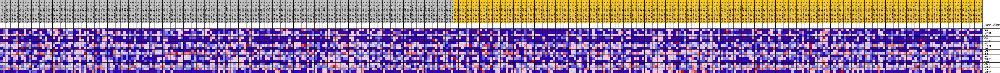
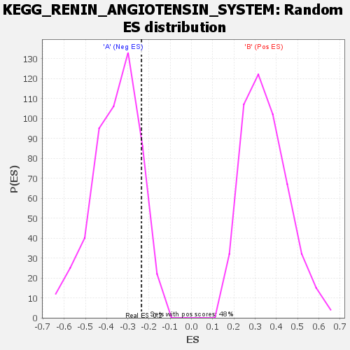

| | | Dataset | my.my.cls#B_versus_A.my.cls#B_versus_A_repos |
| Phenotype | my.cls#B_versus_A_repos |
| Upregulated in class | A |
| GeneSet | KEGG_RENIN_ANGIOTENSIN_SYSTEM |
| Enrichment Score (ES) | -0.23594624 |
| Normalized Enrichment Score (NES) | -0.66315997 |
| Nominal p-value | 0.87283236 |
| FDR q-value | 0.860931 |
| FWER p-Value | 1.0 |
Table: GSEA Results Summary
 Fig 1: Enrichment plot: KEGG_RENIN_ANGIOTENSIN_SYSTEM
Fig 1: Enrichment plot: KEGG_RENIN_ANGIOTENSIN_SYSTEM
Profile of the Running ES Score & Positions of GeneSet Members on the Rank Ordered List
| SYMBOL | TITLE | RANK IN GENE LIST | RANK METRIC SCORE | RUNNING ES | CORE ENRICHMENT | | 1 | MME | na | 3703 | 0.095 | 0.0807 | No |
| 2 | AGTR1 | na | 6152 | 0.079 | 0.1596 | No |
| 3 | CTSA | na | 17766 | 0.036 | 0.0097 | No |
| 4 | CMA1 | na | 18023 | 0.035 | 0.0592 | No |
| 5 | AGTR2 | na | 18804 | 0.033 | 0.0961 | No |
| 6 | AGT | na | 30819 | 0.002 | -0.1131 | No |
| 7 | THOP1 | na | 32376 | -0.002 | -0.1380 | No |
| 8 | REN | na | 32472 | -0.002 | -0.1366 | No |
| 9 | ACE2 | na | 35859 | -0.010 | -0.1803 | No |
| 10 | NLN | na | 36603 | -0.012 | -0.1743 | No |
| 11 | MAS1 | na | 36760 | -0.013 | -0.1573 | No |
| 12 | ENPEP | na | 41215 | -0.025 | -0.1979 | Yes |
| 13 | CTSG | na | 42187 | -0.028 | -0.1724 | Yes |
| 14 | CPA3 | na | 42196 | -0.028 | -0.1300 | Yes |
| 15 | LNPEP | na | 47379 | -0.044 | -0.1529 | Yes |
| 16 | ACE | na | 49206 | -0.052 | -0.1051 | Yes |
| 17 | ANPEP | na | 56408 | -0.153 | 0.0038 | Yes |
Table: GSEA details [plain text format]

Fig 2: KEGG_RENIN_ANGIOTENSIN_SYSTEM
Blue-Pink O' Gram in the Space of the Analyzed GeneSet

Fig 3: KEGG_RENIN_ANGIOTENSIN_SYSTEM: Random ES distribution
Gene set null distribution of ES for KEGG_RENIN_ANGIOTENSIN_SYSTEM